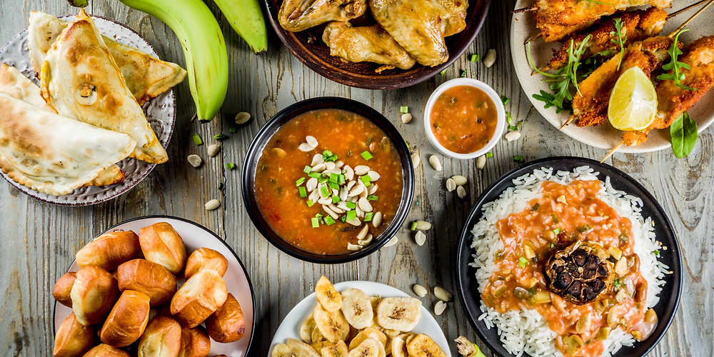
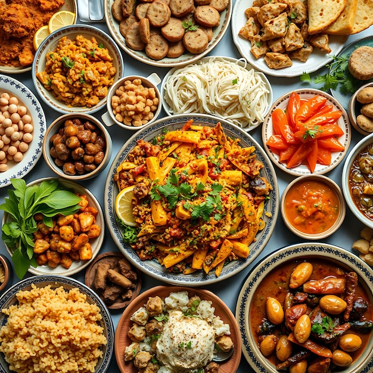
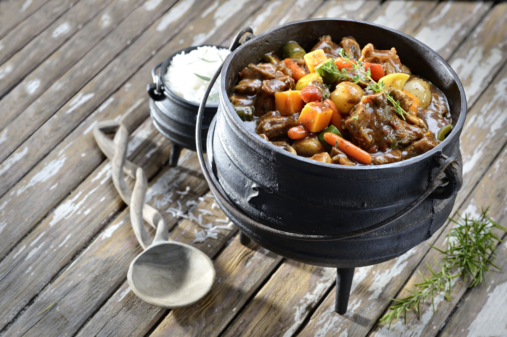

Intro
As in every part of the world, different parts of Africa has different types of culutres and foods; but the most common food in Africa is nsima. This website has been created to give the the idea of main common food used in Africa, Malawi in particular, with the aim of selling the country to the world for people know Africa, but very few know about Malawi and the common food in Africa as a whole.
Nsima has been known to Africans for many years, it is comes in different types, and cooked differntly, it is made of maize flour, yam flour or cassava, depending on culture. But the most common one is what is made of maize Flour, and this come in three forms; white flour, cream flour and whole maize flour
The Apetite of Africa

African Dish
Africa is rich of tribes culture, and have so much different type of people from tribes and culture, that alone makes the land to have a very great number of the variety of food which most of the has not been record hear. What I came up with was only a few main food that can be found almost through out ot Africa.

The Taste of Africa
In the Western part of Africa most of their food is with hot spices, and most of the time it is mixed with its side food, which is made up of meat, fish and vegetables. But in the Eastern part, in particular the Ethiopian part, there for is known with full of curry. While in the Southern part the food almost with no spices, their rice is plain. Plantains and bananas are also commoly cooked as the main food in most parts of the continent.

Western food
variety
These are some of the variety of the food that is found in Ghana, Nigeria, Senegal, Gambia and Niger; which most of their rice is cooked with spices, and it is much dry if you compare with the rice that is cooked in the Central-Eastern Africa like Malawi and Zambia. They take this rice together with fish, meat and vegetables, all with much spice.

Southern Africa Cooking Pots
The leg pot cooker is the kind of pot mostly used in the Southern Africa, this kind of pots are mostly used for stew and rice; while nsima is cooked in a different pot. Natural yoghut can also be cooked in these type of pots as stew for rice of nsima, in Malawi the yoghut is found in the Nothern region.